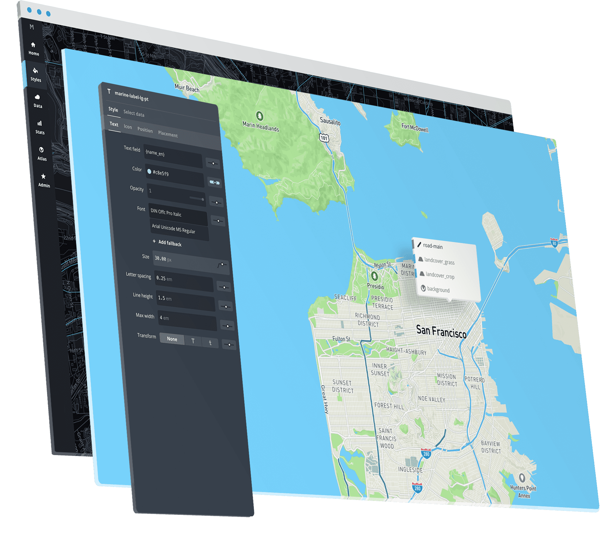
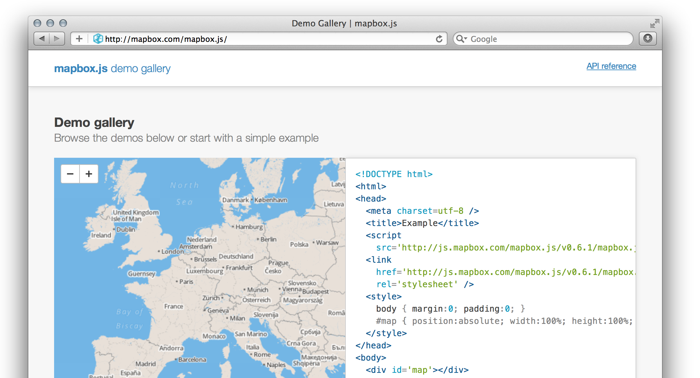

Follow along:
http://bit.ly/23sQgS8
Evolution of Mapbox Documentation

Mapbox is a mapping platform for developers and designers
Change the way people move around cities and understand our planet.
Set of building blocks and tools that make it easy to integrate location.
Tools
Mapbox Studio
i can haz toolz?

apply for support and documentation?
¯\_(ツ)_/¯
"DOCS ARE PRODUCT!"
"If your docs aren't first in a Google search, you're doing it wrong."

- 11 APIs - everything from geocoding to directions
- several hundreds of support requests per month (956 last month)
- 140+ team members in 16 countries
- 400+ open source repos
- building on existing docs structure
- growing a support team that's technical and empathetic
- deprecation and innovation of our applications
- clear communications with our customers
- managing the volume of support requests
Migrating Help Desks
Constant iteration of docs
product vs process
Our tools target specific problems. GIS tools abstract all the problems away into one big problem and slap a "GIS" label on it.
instead of trying to abstract it into one solution, we make it clear that there are building blocks to get to solutions
- automated testing
- retext-mapbox-standard
- docbox
write simple English, use consistent terminology, and avoid insensitive language
The four sets of rules of retext-mapbox-standard:
- retext-simplify: recommends simple commonplace words to replace 10 cent words
- retext-equality: bans gendered language and potential slurs
- acronyms and brands that should be consistently styled
- words to avoid in educational writing
- doesn’t include any punctuation or grammar rules
- focus on usage and target technical writing
docbox
- open source REST API documentation system
- takes structured Markdown files and generates a friendly two-column layout with navigation, permalinks, and examples
- it's Markdown!
JavaScript application written in React
- remark - markdown parser and compiler
- creates a syntax tree to structure the layout
- tests for everything - from broken links to invalid examples (eslint)
- build tasks
Thanks!